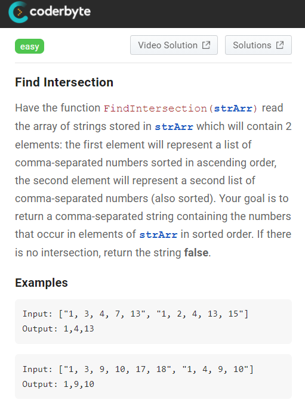
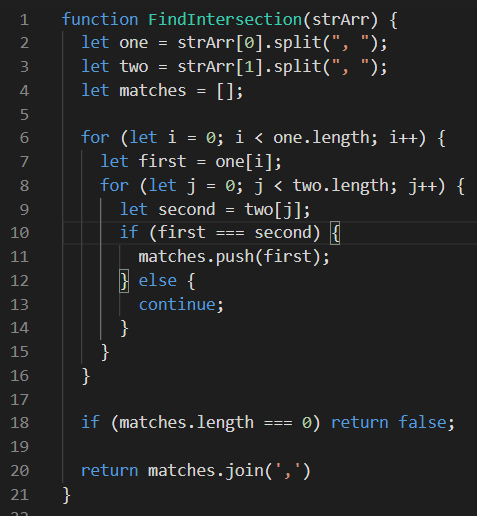
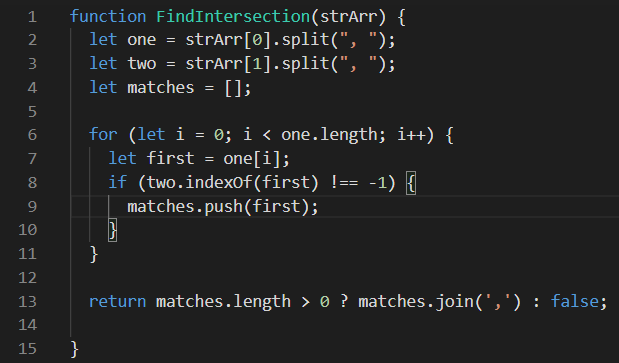
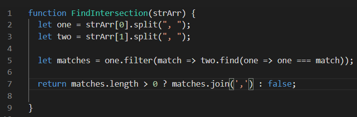
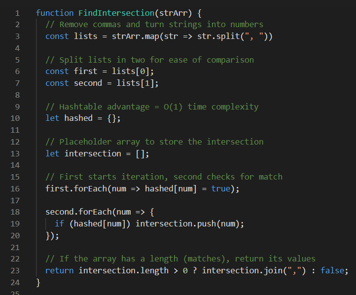

Code challenges suck.
Let's solve stupid problems together.
Code challenges don't mimic any app or website you'd ever build.
No code challenge website supplys any useful guidance or context.
You'll never need a linked list or binary search tree in the real world.
The result? Hundreds of hours lost. And you gain nothing for the time invested.
It's insane for employers to expect you to jump through this hurdle for an entry level job.
And yet this is the world web developers live in. Thus, I'm going to do one code challenge per day and post the result here.
Perhaps I'll troll my way to a software engineering job in the process (unless I get enough web design clients to not give a heck first).
Edit: I changed my approach a little. Instead of one code challenge per day, I'm doing many different solutions for the same problem.
I've finally exhaused possibilities for the first one and will move onto another code challenge next week (Monday to be precise).
Code Challenge 1: Find Intersection

Why would you ever receive a function input like this?
There's no telling. Illogical inputs tend to be the norm in code challenges.
But those commas and spaces are gonna cause problems, so we should probably remove them first.
Thankfully there is a split method in JavaScript, which serves the purpose. It splits a string into a subarray (or something).
I don't know what the hell that actually means. But it makes the commas and spaces go away, which is precisely what we need.
Since the goal is to compare two numbers -- and ONLY two numbers -- we can use zero indexing to split the string into two parts.
We'll also need a placeholder array. The goal is to loop through each number (that's in string format for some strange and unknown reason).
Given there are two numbers (that aren't a number) to compare, we'll use a nested for loop. In other words, a for loop within a for loop.
Don't forget your square brackets, as you need those to access the index of each element. Let's just assign them to a variable.
We'll name them "first" and "second" since that's logical. If they match, we'll push them to the "matches" placeholder array.
But the writer of this problem doesn't want us to return an array. They want a string of numbers (again). Use join for that.
Lastly, let's not forget the scenario where there are no matches. We'll add a conditional to check the array's length.
If the array's empty, there are no matches. Return false. Otherwise, there are matches. Return the joined value.
Computer science wizards hate this solution, because its time complexity is O(n)^2 (read: slow). Oh, well.

Snark aside, we can solve this problem with one for loop to make the time complexity better: O(N)-ish. The indexOf method helps.
Instead of looping through both arrays, we loop through one. If the index equals -1, that means the element doesn't exist (skip it).
Otherwise, the element exists in both arrays -- read: it classifies as an "intersection" -- and thus, it should be pushed to the array.
I've also simplified the if/else statement with a ternary operator. This isn't a great practice for complex code. But it works for simple stuff.

Lastly, here's an even cleaner solution. Array methods like find and filter eliminate the need for a loop.
Connecting the two together makes sense here. This code "filters" through the first array and "finds" matches in the second array.
And then we assign the matches to a variable, which is returned as usual (assuming the array length isn't zero, which should get a "false" flag).

Oops, I lied. Here's a bonus solution. It applies a computer science concept, which makes me feel proud (CS isn't my strong-suit).
For now, let's just assume a hash table operates in the same manner as an object. For this problem, that's all you need to know.
As usual, we split the lists in two and assign them to separate variables. This is the easiest way to find the intersection.
Next, we create an empty object named "hashed" and a placeholder array which we'll use to store the matches.
We utilize the forEach method to iterate through both of our lists.
First, we fill the hash table with array number one's values.
Second, we compare those values with the second array.
If there's a match, we push it to the result array.
Why's all the extra code worth it? Great question.
Time complexity is O(1) (as good as it gets).
Use this solution in a code interview.
They'll think you're a genius.
